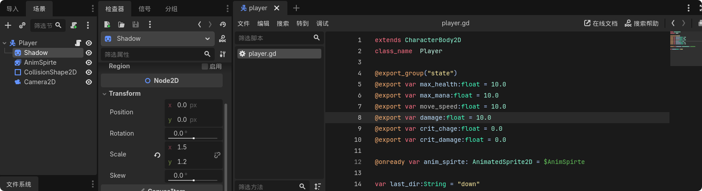
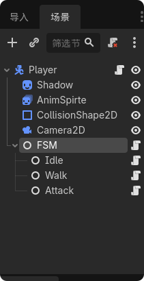
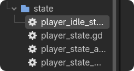
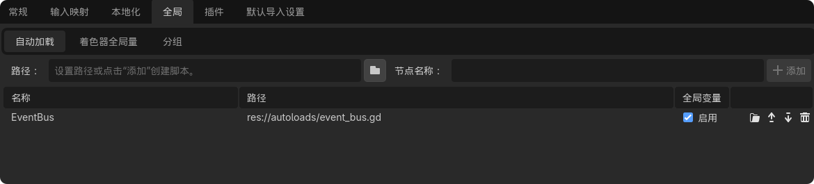
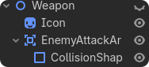
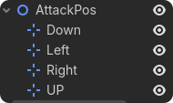
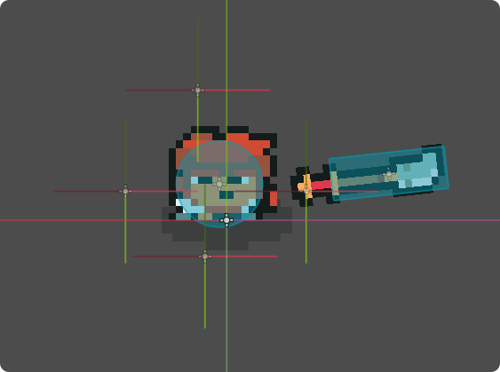

从零开始学习 Godot 4 开发 2D RPG 游戏

创建 2D 角色节点，然后依次添加以下子节点：
为角色添加一个阴影效果，提升视觉表现。
添加 AnimatedSprite2D 节点，用于播放角色的动画。
添加 CollisionShape2D 节点，用于检测角色与环境的碰撞。
添加 Camera2D 节点，让摄像机跟随角色移动。
为 CharacterBody2D 节点添加脚本。
extends CharacterBody2D
class_name Player
@export_group("state")
@export var max_health:float = 10.0
@export var max_mana:float = 10.0
@export var move_speed:float = 10.0
@export var damage:float = 10.0
@export var crit_chage:float = 0.0
@export var crit_damage:float = 0.0
@onready var anim_spirte: AnimatedSprite2D = $AnimSpirte
var last_dir:String = "down"extends CharacterBody2D - 继承 CharacterBody2D 类，获得 2D 角色物理能力class_name Player - 定义这个节点类名为 Player，方便其他地方引用@export_group("state") - 导出一个属性分组，在编辑器中显示为"state"@export var max_health:float - 导出的属性值，可以在编辑器中修改@onready var anim_spirte - 当节点就绪后获取动画精灵节点的引用var last_dir:String = "down" - 记录角色最后朝向，初始为"down"有限状态机（FSM）用于管理角色的不同状态，如待机、行走、攻击等。
先创建一个状态机脚本，命名为 state.gd。
# state.gd
extends Node
class_name State
var fsm :FSM # 创建变量来存储有限状态机的引用
func enter_state() -> void:
pass
func process_state(delta:float) -> void:
pass
func exite_state() -> void:
passclass_name State - 定义这个类为 State，方便其他地方引用var fsm :FSM - 存储对 FSM 状态机的引用，用于状态切换enter_state() - 进入状态时调用的函数process_state(delta) - 每帧处理的函数exite_state() - 退出状态时调用的函数extends Node
class_name FSM
signal on_state_transition(state_name:String) # 信号
@export var initaial_state: NodePath # 创建节点路径并存储当前状态
var curr_state:State
func _ready() -> void:
await owner.ready # 等待所有者就绪，避免某些场景或节点未加载时的错误
for state :State in get_children(): # 遍历所有的子节点
state.fsm =self
curr_state =get_node(initaial_state) # 当前状态引用=初始状态路径里面的节点
curr_state.enter_state()
func transition_to(state_name:String) ->void: # 状态转换函数
if not has_node(state_name): # 确保场景中存在此名称的节点
return
curr_state.exite_state() # 退出当前状态
curr_state= get_node(state_name) # 获取新状态
curr_state.enter_state() # 进入新状态
on_state_transition.emit(curr_state.name) # 状态转换信号分享名称signal on_state_transition - 定义一个信号，当状态转换时发出@export var initial_state: NodePath - 可以在编辑器中设置初始状态await owner.ready - 等待父节点准备完成for state in get_children() - 遍历所有子节点（状态节点）transition_to(state_name) - 切换到指定状态的函数
再创建一个玩家状态机脚本命名为 player_state.gd。
extends State
class_name PlayerState
var player :Player
func _ready() -> void:
await owner.ready
player =owner as Playerextends State - 继承 State 基类var player :Player - 存储对 Player 节点的引用player = owner as Player - 将父节点转换为 Player 类型
在玩家场景下创建 FSM 节点，然后创建对应的待机、行走的攻击节点。
先在玩家脚本中进行覆盖过程函数，添加是否移动函数、更新方向函数、动画播放函数。
extends CharacterBody2D
class_name Player
@onready var fsm: FSM = $FSM
@export_group("state")
@export var max_health:float = 10.0
@export var max_mana:float = 10.0
@export var move_speed:float = 10.0
@export var damage:float = 10.0
@export var crit_chage:float = 0.0
@export var crit_damage:float = 0.0
@onready var anim_sprite: AnimatedSprite2D = $AnimSprite
var last_dir:String = "down"
func _process(delta: float) -> void: # 覆盖过程函数
if fsm.curr_state:
fsm.curr_state.process_state(delta)
func is_moving() -> bool:
var move_input = ["move_down", "move_up", "move_left", "move_right"]
for input in move_input:
if Input.is_action_pressed(input):
return true
return false
func update_direction(input_vector: Vector2) -> void:
if input_vector == Vector2.ZERO:
return
if abs(input_vector.x) > abs(input_vector.y): # abs 绝对值
last_dir = "right" if input_vector.x > 0 else "left"
else:
last_dir = "down" if input_vector.y > 0 else "up"
func play_direction_anim(anim_name: String) -> void:
anim_sprite.play("%s_%s" % [anim_name, last_dir]) # 格式化字符串，替换内容值func _process(delta) - 每帧调用的函数，分发到当前状态处理is_moving() - 检测是否有移动输入，返回 true 或 falseupdate_direction(input_vector) - 根据输入向量更新角色朝向abs(input_vector.x) - 取绝对值，比较 X 和 Y 轴的大小来确定主要方向play_direction_anim(anim_name) - 播放动画，格式为"动画名_朝向"extends PlayerState
class_name PlayerStateIdle
func enter_state() -> void:
player.play_direction_anim("idle")
func _input(event: InputEvent) -> void:
if player.is_moving():
fsm.transition_to("Walk")enter_state() - 进入待机状态时播放 idle 动画_input(event) - 监听输入事件if player.is_moving() - 如果检测到移动，切换到 Walk 状态extends PlayerState
class_name PlayerStateWalk
func enter_state() -> void:
player.play_direction_anim("walk")
func process_state(delta: float) -> void:
var input_vector = Input.get_vector("move_left", "move_right", "move_up", "move_down")
if input_vector == Vector2.ZERO:
fsm.transition_to("Idle")
return
player.update_direction(input_vector)
player.play_direction_anim("walk")
player.velocity = input_vector * player.move_speed
player.move_and_slide()Input.get_vector() - 获取方向键输入，返回 Vector2 向量if input_vector == Vector2.ZERO - 如果没有输入，回到 Idle 状态player.update_direction() - 更新角色朝向player.velocity = input_vector * player.move_speed - 设置移动速度player.move_and_slide() - 执行移动，自动处理碰撞新创建为 Node，命名为 HealthComponent，然后添加脚本。
extends Node
class_name HealthComponent
var curr_health:float
var max_health:float
signal on_dead
signal on_health_changed(curr_health:float)
func setup(value:float)->void:
max_health =value
curr_health= value
func take_damage(value:float)->void:
if curr_health <=0:
return
curr_health = max(curr_health-value,0) # 取最大的值，当不等于负数就输入当前生命值，小于零就输入0
on_health_changed.emit(curr_health)
if curr_health<=0:
on_dead.emit()var curr_health:float - 当前生命值var max_health:float - 最大生命值signal on_dead - 死亡信号，当生命值降为0时发出signal on_health_changed - 生命值变化信号setup(value) - 初始化生命值take_damage(value) - 受到伤害，减少生命值max(curr_health-value,0) - 确保生命值不会低于0新建一个文件夹命名为 autoloads，用于保存信号和事件。再文件夹里面创建一个脚本叫 event_bus。
然后点开设置添加全局变量（在项目设置中启用 Autoload）。

extends Node
signal on_player_created
signal on_player_health_update(curr:float,max:float)
signal on_player_mana_update(curr:float,max:float)signal on_player_created - 玩家创建完成信号on_player_health_update - 玩家生命值更新信号on_player_mana_update - 玩家魔法值更新信号extends CharacterBody2D
class_name Player
@onready var fsm: FSM = $FSM
@export_group("state")
@export var max_health:float = 10.0
@export var max_mana:float = 10.0
@export var move_speed:float = 10.0
@export var damage:float = 10.0
@export var crit_chage:float = 0.0
@export var crit_damage:float = 0.0
@onready var health_component: HealthComponent = $HealthComponent
@onready var anim_sprite: AnimatedSprite2D = $AnimSprite
var last_dir:String = "down"
var curr_mana :float
func _process(delta: float) -> void:
if fsm.curr_state:
fsm.curr_state.process_state(delta)
func is_moving() -> bool:
var move_input = ["move_down", "move_up", "move_left", "move_right"]
for input in move_input:
if Input.is_action_pressed(input):
return true
return false
func update_direction(input_vector: Vector2) -> void:
if input_vector == Vector2.ZERO:
return
if abs(input_vector.x) > abs(input_vector.y):
last_dir = "right" if input_vector.x > 0 else "left"
else:
last_dir = "down" if input_vector.y > 0 else "up"
func play_direction_anim(anim_name: String) -> void:
anim_sprite.play("%s_%s" % [anim_name, last_dir])
func setup()->void:
reset_health()
reset_mana()
func reset_health() ->void:
health_component.setup(max_health)
EventBus.on_player_health_update.emit(max_health,max_health)
func reset_mana() ->void:
curr_mana=max_mana # 敌人不使用法力值，只有玩家使用
EventBus.on_player_mana_update.emit(max_mana,max_mana)
func use_mana(value:float) ->void:
curr_mana -=value
curr_mana =max(max_mana,0)
EventBus.on_player_mana_update.emit(curr_mana,max_mana)@onready var health_component - 获取 HealthComponent 组件引用var curr_mana:float - 当前法力值setup() - 初始化，设置生命和法力reset_health() - 重置生命值并发送信号reset_mana() - 重置法力值并发送信号use_mana(value) - 使用法力值@export_group("exp")
@export var base_exp :float =100.0
@export var exp_multiplier:float =2.0
var curr_exp:float
var next_level_exp:float
var curr_level :int = 1
var curr_points:int =0
# 添加导出 经验值组，基础经验值，经验值倍数
# 创建 当前经验值，下一级经验值，当前等级，当前点数@export_group("exp") - 导出经验值属性分组base_exp - 基础经验值，升级所需初始经验exp_multiplier - 经验值倍数，每级递增curr_exp - 当前经验值next_level_exp - 下一级所需经验值curr_level - 当前等级curr_points - 可分配的属性点数signal on_player_new_level(curr:float,new_level:float)
signal on_player_stats_updatedfunc add_exp(value:float) ->void:
curr_exp +=value
while curr_exp >=next_level_exp:
level_up()
EventBus.on_player_new_level.emit(curr_exp,next_level_exp)
func level_up():
curr_exp -=next_level_exp
curr_level +=1
curr_points +=4
next_level_exp *=exp_multiplier
EventBus.on_player_stats_updated.emit()add_exp(value) - 添加经验值，自动检查是否可升级while curr_exp >= next_level_exp - 循环直到经验不足以升级level_up() - 升级处理curr_exp -= next_level_exp - 扣除升级所需经验curr_points += 4 - 每级获得4点属性点next_level_exp *= exp_multiplier - 下一级所需经验增加首先创建武器节点类型为 Node2D，由以下子节点组成：
Sprite2D - 武器图标Area2D - 攻击范围CollisionShape2D - 碰撞体
创建存储攻击位置的 Node2D 节点，由四个 Marker2D 节点构成：Down、Left、Right、UP。


让四个点位对齐角色的手部位置。
选中四个节点，右击选择"上%作为唯一名称访问"，将四个节点拖入对应位置。
@onready var attack_positions :Dictionary ={
"down":%Down,
"left":%Left,
"right":%Right,
"up":%UP
}%NodeName - Godot 4 的唯一名称引用语法Dictionary - 字典，键为方向字符串，值为节点引用在待机状态和行走状态中添加攻击键检测：
# 待机状态中使用
func _input(event: InputEvent) -> void:
if event.is_action_pressed("attack"):
fsm.transition_to("Attack")
return
if player.is_moving():
fsm.transition_to("Walk")# 行走状态中使用
func process_state(delta: float) -> void:
var input_vector = Input.get_vector("move_left", "move_right", "move_up", "move_down")
if Input.is_action_pressed("attack"):
fsm.transition_to("Attack")
return
if input_vector == Vector2.ZERO:
fsm.transition_to("Idle")
return
player.update_direction(input_vector)
player.play_direction_anim("walk")
player.velocity = input_vector * player.move_speed
player.move_and_slide()先将武器的默认 monitoring 属性关闭，通过代码实现这个属性的启动和关闭。
@onready var enemy_area: Area2D = %EnemyAttackArea
func enable_weapon_collison(value:bool) -> void:
enemy_area.monitoring =valueenemy_area.monitoring - Area2D 的监测属性= value - 开启或关闭碰撞检测extends PlayerState
class_name PlayerStateAttack
var weapon_rotations:Dictionary ={ # 武器旋转变量
"down":180.0,
"left":-90.0,
"up": 0.0,
"right":90.0
}
func enter_state() -> void:
player.play_direction_anim("attack")
position_weapon()
player.anim_sprite.animation_finished.connect(_on_animation_finished)
func exite_state() -> void:
if player.anim_sprite.animation_finished.is_connected(_on_animation_finished):
player.anim_sprite.animation_finished.disconnect(_on_animation_finished)
func position_weapon() ->void:
var dir_key:String =player.last_dir
var marker:Marker2D =player.attack_positions[dir_key]
player.weapon.global_position =marker.global_position
player.weapon.rotation_degrees =weapon_rotations[dir_key]
player.weapon.show()
player.enable_weapon_collison(true)
func _on_animation_finished():
player.enable_weapon_collison(false)
player.weapon.hide()
fsm.transition_to("Idle")weapon_rotations - 字典，存储四个方向的武器旋转角度enter_state() - 进入攻击状态时调用，播放攻击动画，定位武器animation_finished.connect() - 连接动画完成信号position_weapon() - 根据朝向设置武器位置和旋转角度player.weapon.show() - 显示武器enable_weapon_collison(true) - 开启武器碰撞检测_on_animation_finished() - 动画播放完成时的回调disconnect() - 断开信号连接，避免重复调用fsm.transition_to("Idle") - 返回待机状态在城镇场景中动态生成玩家：
extends Node2D
class_name Town
@export var player_scene: PackedScene
func _ready() -> void:
create_player()
func create_player() -> void:
var player: Player = player_scene.instantiate() # 动态实例化玩家场景
add_child(player) # 添加到场景树
player.setup() # 初始化玩家属性
EventBus.on_player_created.emit() # 发出玩家创建完成信号@export var player_scene: PackedScene - 可在编辑器中指定玩家预制体instantiate() - 实例化预制体场景add_child(player) - 添加到场景树player.setup() - 初始化玩家属性